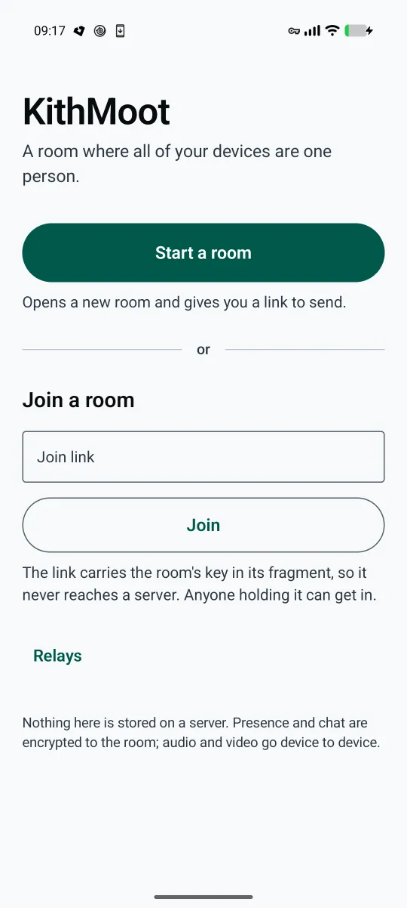

A person is the unit that joins a room. Not a device.
Bring a phone for the camera and microphone, and a laptop for the screen share. Everyone else in the room sees one participant carrying three tracks — not two strangers who happen to share a name.
Every incumbent gets this wrong, Jitsi included. Identity is per-connection, so the same person joining from a laptop and a phone arrives as two tiles, two names and two mute buttons. KithMoot groups by participant instead of by connection. That is the whole product; everything else exists to make that one thing true.
What it does
- Video, voice, chat and screen share
- Media is negotiated device to device over WebRTC. There is no media server in the path, and nothing to run.
- Join by URL
- A room is a 32-byte secret carried in the link's fragment. Fragments are never sent to a server, so whatever serves this page has never seen a room key. Anyone holding the link can walk in; nobody outside it can tell the room exists.
- No account
- Type a name and you are in. The name is self-asserted — anyone can type any name, including yours — so a short version of your key sits beside it everywhere. If you would rather use a Nostr key you already hold, sign in with an extension, a bunker or Amber; the key stays where it is and this page never holds it.
- No operator
- Rooms ride the public Nostr relays that already exist. Presence and chat are encrypted to the room key, so a relay carrying a room cannot read its guest list — by name or by key.
What it looks like
Screenshots from a Pixel 10 Pro XL running the native Android client. Nothing here is a mockup.
{kind=link}

Which platforms
| Platform | Video | Voice | Chat | Screen share |
|---|---|---|---|---|
| Desktop browser (Chrome, Firefox, Safari) | yes | yes | yes | yes |
| Android — native app | yes | yes | yes | yes |
| Android — browser / PWA | yes | yes | yes | unreliable |
| iOS / iPadOS — Safari or PWA | yes | yes | yes | no |
There is no iOS app. The web app loads on iOS and video, voice
and chat all work, but getDisplayMedia does not exist on iOS Safari,
so screen sharing is impossible from an iPhone or iPad in any browser — including
Chrome and Firefox for iOS, which are Safari underneath. Sharing an iOS screen
needs a native app using ReplayKit, and that is not built.
This is also why the Android client is native rather than a browser tab: mobile browsers cannot reliably share a screen, and screen sharing is half the point.
What does not work yet
Stated plainly, before anyone else finds it.
- No iOS app. See above. It is the largest gap.
- Forwarder trees are two levels deep. Enough for a room of about 21; beyond that nobody has measured anything.
- No browser-as-forwarder. It needs WebRTC Encoded Transform, which is solid in Chrome and patchy in Safari, so it stays opportunistic and never load-bearing. The reference forwarder is a small Node process.
- Android consumes forwarders; it cannot act as one. It also has no persisted identity yet — leaving a room and rejoining makes you a new participant.
- Encrypted media costs an extra encode and decode pass, and interacts badly with some hardware codec paths. It is only needed once a forwarder is in the path; pure mesh is already end-to-end via DTLS-SRTP.
- Kind numbers are provisional and will change once the spec is written.
Get the Android app
Package dev.forgesworn.kithmoot. The APK is published on GitHub
Releases. If that page is empty, no signed build has been cut yet — build it from
source in the meantime.
- Obtainium
-
Installs and updates straight from GitHub Releases, with no store in the middle.
Add
https://github.com/forgesworn/kithmoot-androidas a source and it will track new builds on its own. - Zapstore
- The Nostr app store, and the other route once builds are signed and published there.
- Or skip the app
- The web app is an installable PWA — add it to a home screen or a dock and a service worker carries the shell offline. On Android it does video, voice and chat; screen sharing is the part a browser cannot be relied on for.
How it is checked
- 53 published interop vectors
- Room derivation, join URLs, device credentials, roster events, signal wrapping, kindred proofs, access evaluation, TURN credentials and room descriptors. Both implementations are checked against them.
- Two independent implementations
- The Kotlin client was written against those published vectors rather than against the TypeScript source. A protocol implemented once, in one language, by one person, is a product; implemented twice from a published wire contract, it is infrastructure.
- 454 tests, plus a live suite
- The fast suite runs against an in-process relay simulator with no network. A separate live suite checks the wire format against real public relays, and an end-to-end acceptance test drives three browsers through the whole claim.